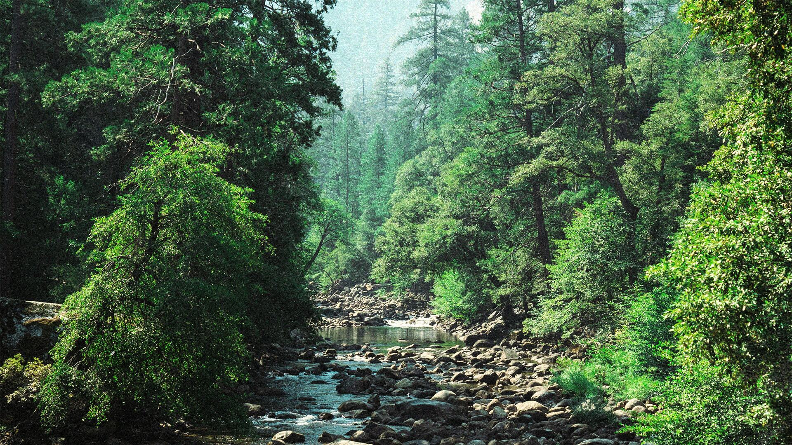
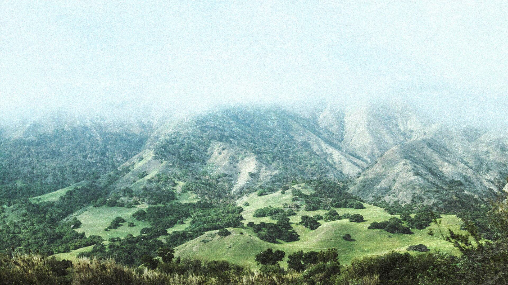
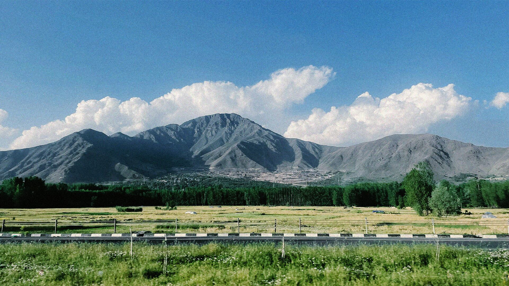

Get recognized. For how you already do business.
Flat-fee certification consulting for small businesses across Canada. You're paying me so you don't lose a year on the wrong credential or a rejected submission. Every engagement runs through me.
B Corp.
B Lab certification provides an independent assessment of your entire business, not just individual claims. Since 2026, it has required minimum standards across seven impact areas, scaled to company size, so strengths cannot offset weaknesses. Certification is verified by a third party, with a follow-up audit in the third year. This is the main certification I support clients in achieving.
B Corp is the target for most, unless another certification is a better fit.
Certified B Corps worldwide
— B Lab, July 2025People working at Certified B Corps
— B Lab, July 2025Countries with Certified B Corps
— B Lab, July 2025Industries represented
— B Lab, July 2025
Not for everyone. Great for these.
Good businesses get overlooked. Here's why.
“Most of the work is already done. It just isn't written down the way B Lab wants, and the last stretch is where the costly mistakes tend to hide.”
A credible certification can benefit a small business, yet many never complete the process; not due to lack of qualification, but because the system was not designed for them.
- 01Priced for someone else
- Large firms price their services for companies much bigger than yours. A five-figure quote signals you are not their intended client, causing many small businesses to walk away.Candor's answer: a flat fee, quoted before any work starts.
- 02Genuinely confusing
- B Corp. Benefit Corporation. The Climate Label. ISO 14001. They overlap, they contradict, and the internet makes it worse. You can spend hours researching and still not know which certification you need.Candor's answer: the audit tells you which one, or whether none fits yet.
- 03Feels like a year
- You are likely already meeting many B Lab requirements. The challenge is demonstrating it. With focused preparation that takes a few months, and B Lab's own review adds a few more. The challenge isn't the clock. It's knowing which answers hold up under review and which ones quietly sink a submission.Candor's answer: documentation first, submission second.
One free call. Three flat fees. Stop after any of them.
Begin with the audit. Larger projects are only considered after this step.
-
Start · week 1
A free 30-minute call
FreeWe talk through your business and whether certification actually makes sense. Sometimes the honest answer is a different credential than the one you came in asking about, and I'll say so.
Book the call -
Step 1 · 2 weeksBegin here
Readiness Audit
$1,800I run B Lab's full self-assessment on your business and write the roadmap: which certifications you qualify for, the gaps, what closing them costs, and a realistic timeline. You keep the report whether or not we continue.
- Full self-assessment
- Gap analysis
- Certification comparison
- 10–15 page report
- 60-min walkthrough
-
Step 2 · 3–4 months
Gap-Closing Engagement
$6,500For businesses that know what they need and want help doing the actual work. I draft the policies, build the tracking systems and prepare the evidence package. You make the calls only you can make.
- Policy drafts
- Tracking systems
- Evidence package
- Bi-weekly calls
- Post-certification launch plan
-
Step 3 · 9–12 months total
Full Path to Certification
$12,000+From first call to the B Corp logo on your site: everything in step 2, plus the full B Lab submission, all correspondence and a revision round if the first attempt needs adjustment.
- Submission management
- B Lab correspondence
- Revision round
- Drafted press release
- Badge assets for packaging + social
All prices are in Canadian dollars and exclude applicable taxes (GST/PST). The "+" on Full Path covers additional scope quoted in writing before work begins, such as multiple entities, additional certifications, or a second submission round. B Lab, The Change Climate Project, and 1% for the Planet charge their own fees separately; see the FAQ for current figures. Cancellation and refund terms are in our Terms.

Artem Furman.
No firm, no juniors. Just direct work.
I spent five years managing retail operations in BC before going back to study environmental economics at SFU.
I know what running a small business looks like. I won't pad timelines or sell you a certification you don't need. Every engagement runs through me directly, start to finish.
Artem is pursuing formal recognition through the B Lab US & Canada B Consultants program. His work in sustainability is grounded in economics and environmental management studies at Simon Fraser University.
The questions you may have.
The audit provides clarity: you are either closer than expected, or you need 6–12 months of preparation. Either way, you will know your exact position, and I will be direct if you are not ready.
For businesses under $5M revenue, B Lab U.S. & Canada charges $2,100 USD a year (2026), plus a one-time submission fee. The Climate Label's fee scales with your emissions. 1% for the Planet has membership dues on a sliding scale, from $500 a year, and they count toward your 1% commitment. I walk through all costs in the audit so nothing surprises you.
Honestly, there's no deadline pushing you. B Lab's new standards already apply to every submission since January 2026, so waiting won't get you an easier version. What does change is your business. Certifying at 12 people is usually a lot simpler than at 40, because every new hire, supplier and location adds something to document, and being one of the first in your niche can matter too. So I'd say the best time is when you can give it a few focused months, not when someone tells you it's urgent.
B Corp is a third-party certification from B Lab. Benefit Corporation is a legal entity structure in some jurisdictions that expands what directors can consider beyond shareholder profit. They're different things. You can have one without the other. For most small businesses, the certification is valuable because customers are most likely to recognize it.
Fair challenge. B Corp's credibility has taken hits as larger brands have joined. The honest answer: it's a real verification process, but only as meaningful as your actual practices. I won't help a business game the assessment. I help businesses that are genuinely doing the work get credit for it.
My pricing is designed for businesses your size and quoted before work begins. I have five years of experience in a regulated BC small business, so you do not need to explain your compliance requirements. Your file is handled directly by me from start to finish.

Start with the free score.
Two minutes. You'll know where you actually stand before anyone asks you to commit to anything.
For the first new engagement each quarter, the Readiness Audit report is delivered within 14 business days of receiving your documents. If it's late for reasons on my side, the audit is free.